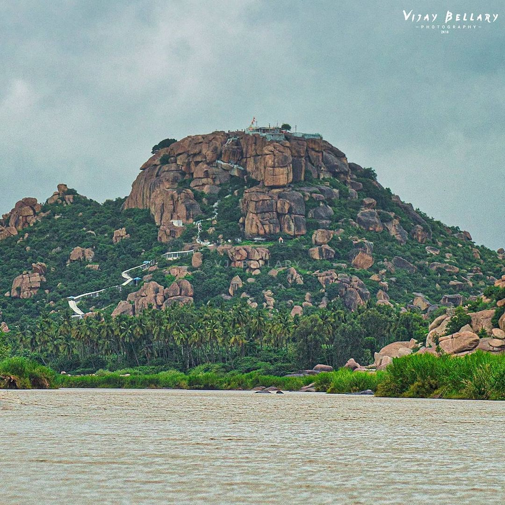
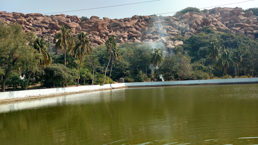
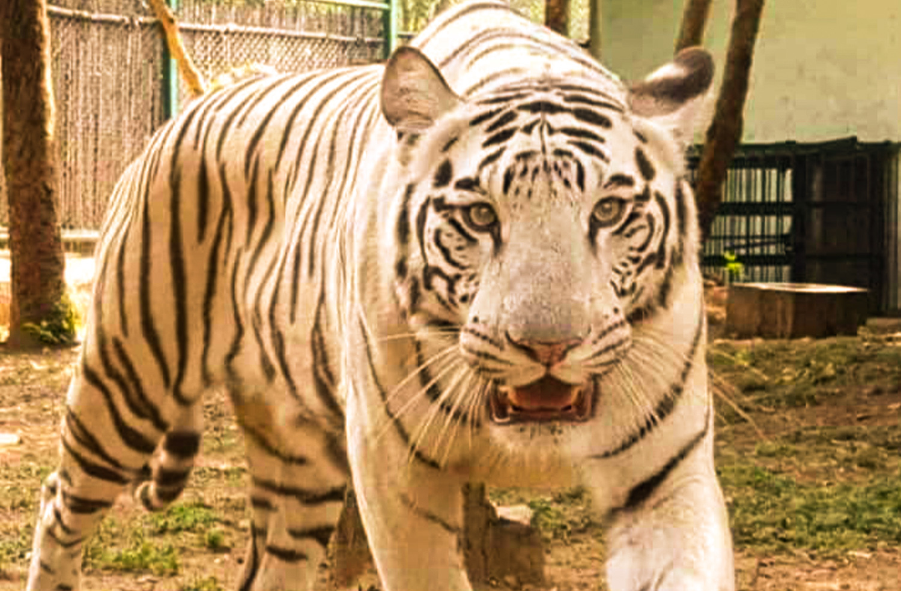

Anegundi
It is a heritage destination near Hampi renowned for its Ramayana Significance, pre-historic rock Art and Vijaynagara era monument in ruins.
Aanjaneya Temple near Anegundi is believed to be birthplace of Lord Hanuman therefore a pilgrim destination.
Pampa Sarovar
Pampa Sarovar is a beautiful lake that is located between near Anegundi in Karnataka.
According to Ramayana, one of the ancient and most famous epics of Hindu mythology, Pampa Sarovar is mentioned as a place through which Lord Rama and his brother Lakshmana had passed during their quest to find Rama’s wife Sita.
Hampi

Hampi, the city of ruins, is a UNESCO World Heritage Site. Situated in the shadowed depth of hills and valleys in the state of Karnataka, this place is a historical delight for travellers.
The Virupaksha temple was once a smaller shrine in the middle of the ancient and majestic Vijayanagara empire.
Atal Bihari Vajpayee Zoological Park
Spread across an area of 141 hectares, the park boasts of Tiger, Lion, Spotter Deer, Sambar, Barking Deer and others.
Several animals like crocs, hyenas, leopard, bear, turtle, fox and langur.